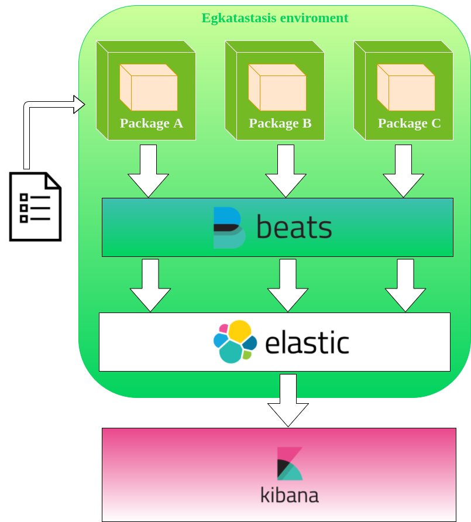

OpenSUSE Egkatastasis
Testing packages installation with Docker
A docker container offers the opportunity to define a custom image, a little vm shiped with all the required software and configuration file that are necessary to run the application inside of it. When a new container is released for production (that could be the docker store or a private image repository for the client project) it is necessary garantee two things:
-
The application that runs inside the container works fine, don't exceed the space defined, basically is consistent with the requirement.
-
The enviroment where the application runs is well defined, there aren't any broken files or missing packages.
The open source project Egkatastasis, created by OpenSUSE engineer Panagiotis Georgiadis try to garantee the point #2 for the OpenSUSE container.
Hi-level architecture
Egkatastasis is basically an enviroment that can be used for test each packages in a separate container. The container used for testing the packages is always the same but is created/destroyed on the fly for each package defined in a specific list that the bash script process read. The log produced during the process for each container is retrieved by Filebeat, enriched with additional information with Logstash and indexed by ElasticSearch, with a Kibana dashboard available to see stats and analyze/filter logs for each package tested.

With this methodology a docker image with several packages could be splitted in many mini-containers, verify if everything works fine. Also it could be useful to test a specific package with several linux distribution, in the future could be realized a web interface with integrated analysis tools as Kibana.
A simple walkthrough
- checkout the repository from github
- move into the docker folder and launch the script that need as argument the package that will be installed into the docker containers
./testit.sh vim
- during the process a new container and its relative logs are generated and managed by the log stack.
- When the testing operation is completed the container is no longer exists but its logs file are saved locally and it are available also on the Kibana dashboard on web.